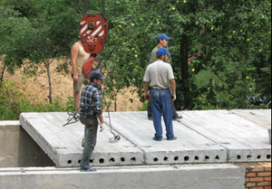
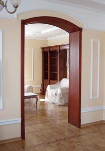
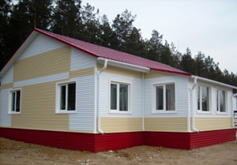

Здания и сооружения, их классификация и конструктивные элементы
Классификация зданий и сооружений
Здание - строение, предназначенное для проживания и деятельности человека. К зданиям относятся жилые дома, школы, кинотеатры, магазины, детские сады, производственные цеха, театры, больницы и др.
Здание театра оперы и балета в Минске
Классификация зданий
По назначению
 Жилые
Жилые
По этажности
малоэтажные (до 5 этажей)
средней этажности (5-12 этажей)
повышенной этажности (12-20 этажей)
высотные (свыше 20 этажей)
По конструкции стен
По технологии изготовления
По долговечности
- 1-я степень (свыше 100 лет)
- 2-я степень (50 - 100 лет)
- 3-я степень (20 - 50 лет)
- 4-я степень (до 20 лет)
По степени огнестойкости
- несгораемые
- трудносгораемые
- сгораемые
Сооружение - строение технического (специального) назначения. Сооружениями являются мосты, каналы, туннели, мачты, эстакады, плотины, шлюзы, силосные башни, транспортные резервуары, бассейны, канатные дороги, газгольдеры, дымовые и вентиляционные трубы.
Складское сооружение: склад
Гидротехническое сооружение: плотина
Классификация сооружений по функциональному назначению
Сооружения связи, электропередачи, трубопроводный транспорт
Спортивно-оздоровительные
Требования к зданиям и сооружениям:
- функциональные (соответствовать своему назначению);
- технические (здания должны быть прочными, устойчивыми, долговечными, огнестойкими, надежно защищать людей и оборудование от вредных атмосферных воздействий);
- архитектурные (красивый внешний вид за счет выбора строительных материалов, их качества и гармоничной связи с окружающей средой);
- экономические (уменьшение затрат труда, материалов и сокращение сроков возведения).
Здания и сооружения, их классификация и конструктивные элементы
Основные конструктивные элементы зданий
Балкон - огражденная площадка на фасаде стены. Может иметь покрытие и остекление
Дверь - подвижное ограждение в проеме стены или перегородки
Карниз- горизонтальный выступ, завершающий стену здания. Отделяет плоскость крыши от вертикальной плоскости стены или разделяет плоскость стены по выделенным горизонтальным линиям
Кровля - верхний элемент крыши, защищающий здание от атмосферных осадков
Крыша - конструктивный элемент, завершающий здание и защищающий его от воздействия внешней среды
Лестница - конструктивное устройство для сообщения между этажами
Лоджия - открытая (с одной стороны) часть помещения на фасаде здания
Окно - светопрозрачное ограждение, предназначенное для освещения и проветривания помещения. Окна являются главным (до 50 %) источником теплопотерь в зданиях. В современных окнах используются преимущественно стеклопакеты, реже — одиночные стёкла.
Опора - служит для поддержания вышерасположенных конструкций здания (горизонтальных конструкций, внутренних и наружных ограждений) и передачи нагрузок от них через фундаменты на основание. Конструкции и материалы опор различаются в зависимости от величины и характера передаваемых усилий
Отмостка - конструктивный элемент здания, который защищает фундамент от дождевых вод и паводков, выполняет декоративную функцию, образуя дорожку вокруг здания. Представляет собой, как правило, бетонную или асфальтовую полосу, проходящую по всему периметру здания и расположенную под тупым углом к стенам. Ширина отмостки зависит от типа грунта и выноса карнизных свесов крыши
Парапет - невысокая стенка, проходящая по краю крыши, террасы, балкона, вдоль моста и других сооружений в качестве заграждения
Перегородка - вертикальное ограждение, не несущее нагрузки, предназначеное для разделения здания в пределах этажей на отдельные помещения
Перекрытие - разделяет здание по высоте на этажи и воспринимает нагрузки, возникающие при эксплуатации здания (массы человека, оборудования, мебели).
Классификация перекрытий
- по местоположению в здании (надподвальные, нижние, междуэтажные, чердачные)
- по конструкции (балочные, плиточные, безбалочные)
- по материалу (железобетонные, деревянные, из стальных балок)
Перемычка - конструкция из железобетонных балок или кирпича, перекрывающая проем
Пилястра - столб, выступающий из плоскости стены, который служит для усиления стен, а также для придания устойчивости стенам большой высоты. В плане пилястры бывают прямоугольными, полукруглыми (полуколонны) и сложной формы.
Проем - отверстие для окон, дверей в стенах или перегородках
Простенок - участок стены между проемами. Различают рядовые и угловые простенки
Стена - вертикальная ограждающая конструкция, отделяющая помещение от внешней среды, воспринимающая нагрузки от перекрытия и передающая их на фундамент
Классификация стен
- по роду применяемых материалов (каменные, деревянные, грунтовые, из синтетических материалов)
- по характеру работы (несущие, самонесущие, ненесущие)
- по конструкции и способу возведения (из мелкоштучных элементов, из крупных камней, монолитные, крупнопанельные)
Фасад - наружная, лицевая или каждая из сторон здания
Виды фасадов:
- главный
- оковой
- задний
- уличный
- дворовой
 Фундамент - подземная часть здания, воспринимающая нагрузки от вышележащих конструкций и передающая их на грунт. Выбор фундамента зависит от сейсмичности местности, от типа грунта и от архитектурных решений
Фундамент - подземная часть здания, воспринимающая нагрузки от вышележащих конструкций и передающая их на грунт. Выбор фундамента зависит от сейсмичности местности, от типа грунта и от архитектурных решений
Классификация фундаментов:
- по конструктивной схеме (ленточный, столбчатый, сплошной, свайный)
- по материалу (из природного камня, бутобетонный, бетонный, железобетонный, деревянный)
Цоколь - нижняя часть наружных стен, расположенная ниже уровня пола первого этажа, облицованная керамической плиткой, природным камнем или оштукатуренная цементным раствором
Эркер - полукруглый, треугольный или многогранный остекленный выступ на фасаде здания, часто в несколько этажей, иногда на всю высоту фасада. При помощи эркеров можно слегка увеличить внутреннее пространство помещений. Эркеры также способствуют улучшению проникновения солнечного света и увеличению обзора